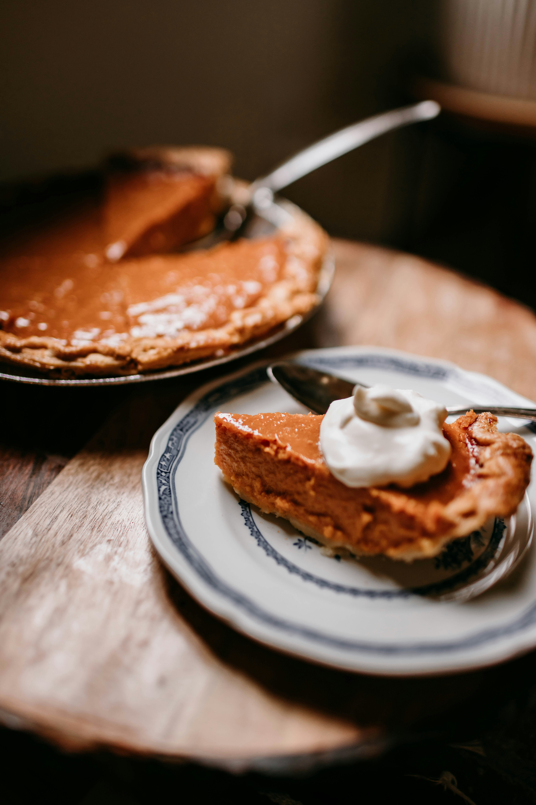

The Best Friendsgiving Pumpkin Pie

About This Recipe
This pumpkin pie is the absolute best recipe that I've
ever made. The rustic, crumbly pastry is contrasted with a soft,
velvety filling for indulgent flavors in every bite. This recipe
is the perfect addition to your Friendsgiving roster and will have
your friends eagerly awaiting it each year.
Ingredients
- 1 medium-sized delica pumpkin
- 3 large free-range eggs
- 175g Domino golden sugar
- 3 teaspoons vanilla bean paste
- 100mL double cream
- 3/4 of a teaspoon ground cinnamon
- 1/2 a teaspoon ground ginger
- 1/4 of a teaspoon ground allspice
- 1/2 teaspoon nutmeg
Instructions
- Preheat the oven to 180°C/350°F. Place the pumpkin on a
baking tray, carefully pierce once or twice with the tip of
a sharp knife, then bake in the oven for 1 hour 30 minutes,
or until golden and very soft. Transfer to a board to cool
completely.
- Once the pumpkin is cool enough to handle, remove the stalk
and, using a kinfe and tongs, carefully slice lengthways, down
the middle. Scoop out the seeds and put aside for tasty cooking
another day. Then weigh out 400-450g of pumpkin flesh.
- Whiz the flesh in a food processor until smooth with the egg yolks
(reserving the whites for later), sugar, vanilla bean paste, double
cream, ground spices, a few good gratings of nutmeg, and a pinch of
sea salt.
- In a clean bowl, whisk the egg whites with a pinch of salt until
stiff, glossy peaks form. Fold the pumpkin mixture into the egg whites
and pour into the pie crust.
- Bake at the bottom of the oven for 45 minutes, or until th filling
is set and the top slightly cracked. Transfer to a wire rack and leave
to cool completely.
Home
Photo by Lulu Gao on Unsplash